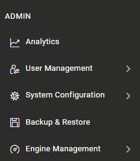
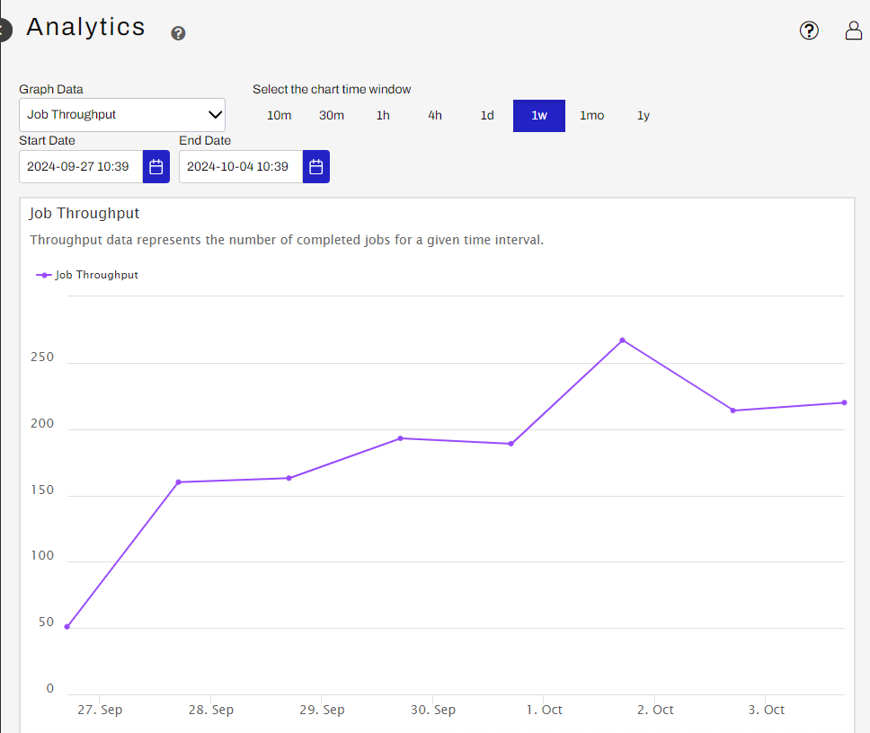
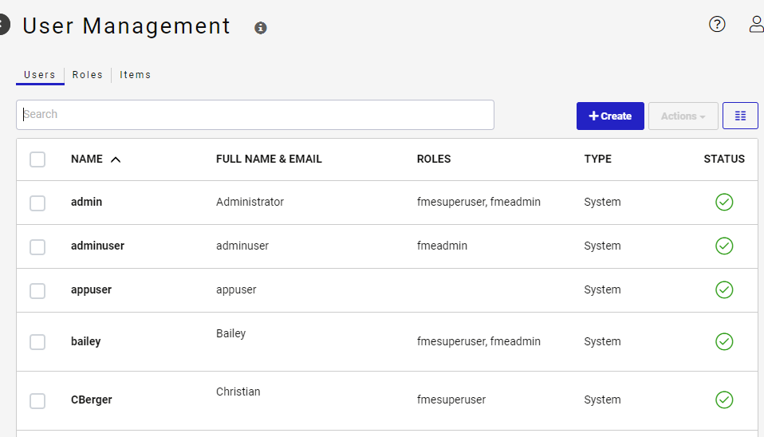
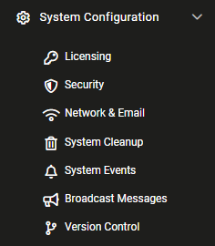
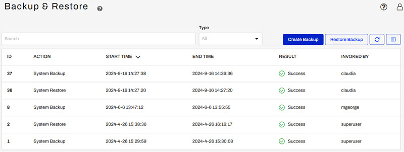
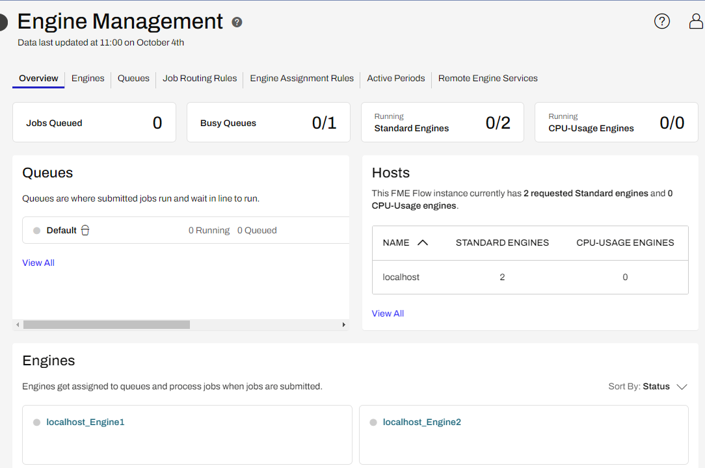

You can learn more about how Users and Roles work and compliment each other through our Access Control guide.
After completing this lesson, you’ll be able to:
Built in to the FME Flow Web UI interface are admin options for administrators to control how FME Flow is configured for the users of the software. These options will only be visible and available to users who are logged in to FME Flow with the ‘fmeadmin’ role, or if a user is given permissions to manage one or many of the following sections.
The five Admin options available are:

The Analytics page is used to visualize throughput metrics to better understand the system’s activity. This page is helpful for monitoring jobs and engines through filterable graphs to determine if efficiency can be increased through Engine Management. Additionally you can select a specific start and end date, as well as the timespan for the graph.

The User Management page is used to create and manage users and roles to control the intended access for each person as they log in. Roles are presets of permissions which can be fine-tuned to determine what type of access users associated with those roles have. Users can belong to one or more roles. This is also where Authentication Service settings are held, such as Windows Active Directory or Security Assertion Markup Language (SAML).

You can learn more about how Users and Roles work and compliment each other through our Access Control guide.
The System Configuration tab covers a series of settings to configure different system elements of FME Flow. These settings include licensing your FME Flow instance, changing security settings related to user passwords and encryption methods, setting up network and email systems, system cleanup, events, and message broadcasting, as well as Version Control to maintain external backups via GitHub.

This section is used to create backups of your entire FME Flow instance and restore your system to a specific backup snapshot. This feature is used in upgrading to a newer version of FME Flow or migrating FME Flow to another machine. Scheduled Backups, if set up, will also appear here.

Engine Management is used to configure how engines will distribute and process jobs. Here you manage how many standard and CPU-Usage engines you have enabled and create different assignment and routing rules to decide how jobs should be run and which jobs should be prioritized over others.

Engines process all FME jobs, and each engine can run one job at a time. When a job is submitted, it is queued, and assigned to an engine to be run based on: engine availability, pre-assigned engine assignment, and routing rules. For example, if there are two jobs sent to the Default Queue and one engine is available, the job which was submitted first will be assigned and run by the engine, and once completed, the second job will run.
Queue Control is a very powerful feature to increase the efficiency of engines. You can learn more through our Queue Control Documentation.